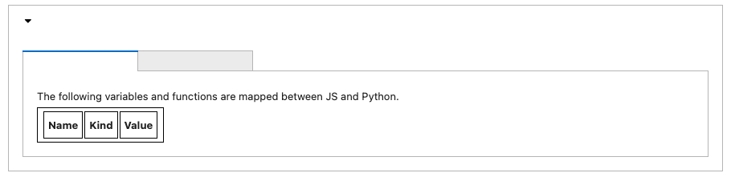
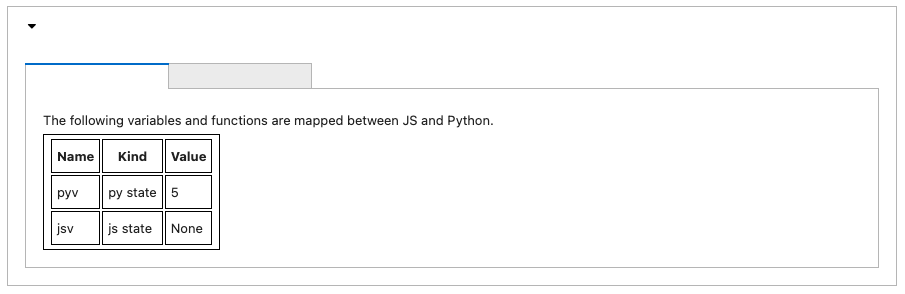
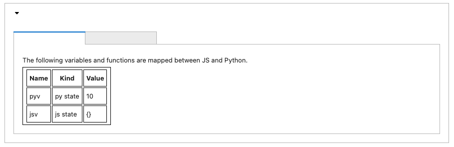
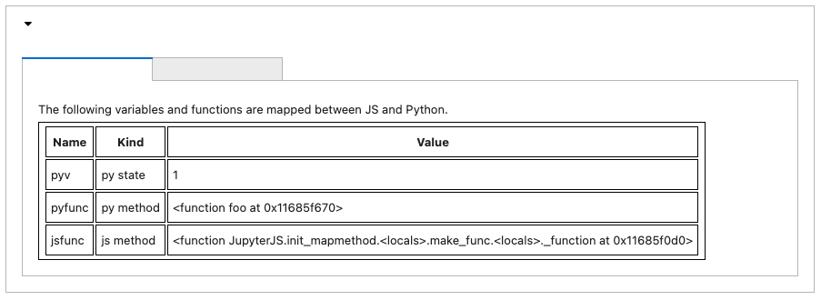
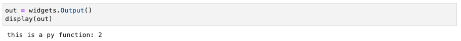
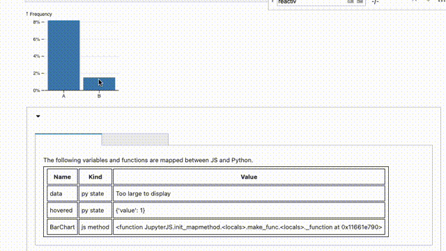

Tutorial#
[1]:
!pip3 install jupyterjs-0.1.0.dev1-py3-none-any.whl
DEPRECATION: Configuring installation scheme with distutils config files is deprecated and will no longer work in the near future. If you are using a Homebrew or Linuxbrew Python, please see discussion at https://github.com/Homebrew/homebrew-core/issues/76621
Processing ./jupyterjs-0.1.0.dev1-py3-none-any.whl
Requirement already satisfied: bs4==0.0.1 in /usr/local/lib/python3.9/site-packages (from jupyterjs==0.1.0.dev1) (0.0.1)
Requirement already satisfied: ipywidgets>=7.0.0 in /usr/local/lib/python3.9/site-packages (from jupyterjs==0.1.0.dev1) (7.6.3)
Requirement already satisfied: esprima==4.0.1 in /usr/local/lib/python3.9/site-packages (from jupyterjs==0.1.0.dev1) (4.0.1)
Requirement already satisfied: beautifulsoup4 in /usr/local/lib/python3.9/site-packages (from bs4==0.0.1->jupyterjs==0.1.0.dev1) (4.10.0)
Requirement already satisfied: nbformat>=4.2.0 in /usr/local/lib/python3.9/site-packages (from ipywidgets>=7.0.0->jupyterjs==0.1.0.dev1) (5.1.3)
Requirement already satisfied: widgetsnbextension~=3.5.0 in /usr/local/lib/python3.9/site-packages (from ipywidgets>=7.0.0->jupyterjs==0.1.0.dev1) (3.5.1)
Requirement already satisfied: ipykernel>=4.5.1 in /usr/local/lib/python3.9/site-packages (from ipywidgets>=7.0.0->jupyterjs==0.1.0.dev1) (6.0.3)
Requirement already satisfied: jupyterlab-widgets>=1.0.0 in /usr/local/lib/python3.9/site-packages (from ipywidgets>=7.0.0->jupyterjs==0.1.0.dev1) (1.0.0)
Requirement already satisfied: traitlets>=4.3.1 in /usr/local/lib/python3.9/site-packages (from ipywidgets>=7.0.0->jupyterjs==0.1.0.dev1) (5.0.5)
Requirement already satisfied: ipython>=4.0.0 in /usr/local/lib/python3.9/site-packages (from ipywidgets>=7.0.0->jupyterjs==0.1.0.dev1) (7.26.0)
Requirement already satisfied: appnope in /usr/local/lib/python3.9/site-packages (from ipykernel>=4.5.1->ipywidgets>=7.0.0->jupyterjs==0.1.0.dev1) (0.1.2)
Requirement already satisfied: tornado<7.0,>=4.2 in /usr/local/lib/python3.9/site-packages (from ipykernel>=4.5.1->ipywidgets>=7.0.0->jupyterjs==0.1.0.dev1) (6.1)
Requirement already satisfied: jupyter-client<7.0 in /usr/local/lib/python3.9/site-packages (from ipykernel>=4.5.1->ipywidgets>=7.0.0->jupyterjs==0.1.0.dev1) (6.1.12)
Requirement already satisfied: matplotlib-inline<0.2.0,>=0.1.0 in /usr/local/lib/python3.9/site-packages (from ipykernel>=4.5.1->ipywidgets>=7.0.0->jupyterjs==0.1.0.dev1) (0.1.2)
Requirement already satisfied: debugpy<2.0,>=1.0.0 in /usr/local/lib/python3.9/site-packages (from ipykernel>=4.5.1->ipywidgets>=7.0.0->jupyterjs==0.1.0.dev1) (1.4.1)
Requirement already satisfied: jedi>=0.16 in /usr/local/lib/python3.9/site-packages (from ipython>=4.0.0->ipywidgets>=7.0.0->jupyterjs==0.1.0.dev1) (0.18.0)
Requirement already satisfied: pickleshare in /usr/local/lib/python3.9/site-packages (from ipython>=4.0.0->ipywidgets>=7.0.0->jupyterjs==0.1.0.dev1) (0.7.5)
Requirement already satisfied: pygments in /usr/local/lib/python3.9/site-packages (from ipython>=4.0.0->ipywidgets>=7.0.0->jupyterjs==0.1.0.dev1) (2.14.0)
Requirement already satisfied: backcall in /usr/local/lib/python3.9/site-packages (from ipython>=4.0.0->ipywidgets>=7.0.0->jupyterjs==0.1.0.dev1) (0.2.0)
Requirement already satisfied: prompt-toolkit!=3.0.0,!=3.0.1,<3.1.0,>=2.0.0 in /usr/local/lib/python3.9/site-packages (from ipython>=4.0.0->ipywidgets>=7.0.0->jupyterjs==0.1.0.dev1) (3.0.19)
Requirement already satisfied: setuptools>=18.5 in /usr/local/lib/python3.9/site-packages (from ipython>=4.0.0->ipywidgets>=7.0.0->jupyterjs==0.1.0.dev1) (66.0.0)
Requirement already satisfied: pexpect>4.3 in /usr/local/lib/python3.9/site-packages (from ipython>=4.0.0->ipywidgets>=7.0.0->jupyterjs==0.1.0.dev1) (4.8.0)
Requirement already satisfied: decorator in /usr/local/lib/python3.9/site-packages (from ipython>=4.0.0->ipywidgets>=7.0.0->jupyterjs==0.1.0.dev1) (5.0.9)
Requirement already satisfied: ipython-genutils in /usr/local/lib/python3.9/site-packages (from nbformat>=4.2.0->ipywidgets>=7.0.0->jupyterjs==0.1.0.dev1) (0.2.0)
Requirement already satisfied: jsonschema!=2.5.0,>=2.4 in /usr/local/lib/python3.9/site-packages (from nbformat>=4.2.0->ipywidgets>=7.0.0->jupyterjs==0.1.0.dev1) (3.2.0)
Requirement already satisfied: jupyter-core in /usr/local/lib/python3.9/site-packages (from nbformat>=4.2.0->ipywidgets>=7.0.0->jupyterjs==0.1.0.dev1) (4.7.1)
Requirement already satisfied: notebook>=4.4.1 in /usr/local/lib/python3.9/site-packages (from widgetsnbextension~=3.5.0->ipywidgets>=7.0.0->jupyterjs==0.1.0.dev1) (6.4.0)
Requirement already satisfied: soupsieve>1.2 in /usr/local/lib/python3.9/site-packages (from beautifulsoup4->bs4==0.0.1->jupyterjs==0.1.0.dev1) (2.3.1)
Requirement already satisfied: parso<0.9.0,>=0.8.0 in /usr/local/lib/python3.9/site-packages (from jedi>=0.16->ipython>=4.0.0->ipywidgets>=7.0.0->jupyterjs==0.1.0.dev1) (0.8.2)
Requirement already satisfied: attrs>=17.4.0 in /usr/local/lib/python3.9/site-packages (from jsonschema!=2.5.0,>=2.4->nbformat>=4.2.0->ipywidgets>=7.0.0->jupyterjs==0.1.0.dev1) (21.2.0)
Requirement already satisfied: pyrsistent>=0.14.0 in /usr/local/lib/python3.9/site-packages (from jsonschema!=2.5.0,>=2.4->nbformat>=4.2.0->ipywidgets>=7.0.0->jupyterjs==0.1.0.dev1) (0.18.0)
Requirement already satisfied: six>=1.11.0 in /usr/local/lib/python3.9/site-packages (from jsonschema!=2.5.0,>=2.4->nbformat>=4.2.0->ipywidgets>=7.0.0->jupyterjs==0.1.0.dev1) (1.16.0)
Requirement already satisfied: pyzmq>=13 in /usr/local/lib/python3.9/site-packages (from jupyter-client<7.0->ipykernel>=4.5.1->ipywidgets>=7.0.0->jupyterjs==0.1.0.dev1) (22.2.0)
Requirement already satisfied: python-dateutil>=2.1 in /usr/local/lib/python3.9/site-packages (from jupyter-client<7.0->ipykernel>=4.5.1->ipywidgets>=7.0.0->jupyterjs==0.1.0.dev1) (2.8.1)
Requirement already satisfied: nbconvert in /usr/local/lib/python3.9/site-packages (from notebook>=4.4.1->widgetsnbextension~=3.5.0->ipywidgets>=7.0.0->jupyterjs==0.1.0.dev1) (6.1.0)
Requirement already satisfied: terminado>=0.8.3 in /usr/local/lib/python3.9/site-packages (from notebook>=4.4.1->widgetsnbextension~=3.5.0->ipywidgets>=7.0.0->jupyterjs==0.1.0.dev1) (0.10.1)
Requirement already satisfied: jinja2 in /usr/local/lib/python3.9/site-packages (from notebook>=4.4.1->widgetsnbextension~=3.5.0->ipywidgets>=7.0.0->jupyterjs==0.1.0.dev1) (3.0.1)
Requirement already satisfied: prometheus-client in /usr/local/lib/python3.9/site-packages (from notebook>=4.4.1->widgetsnbextension~=3.5.0->ipywidgets>=7.0.0->jupyterjs==0.1.0.dev1) (0.11.0)
Requirement already satisfied: Send2Trash>=1.5.0 in /usr/local/lib/python3.9/site-packages (from notebook>=4.4.1->widgetsnbextension~=3.5.0->ipywidgets>=7.0.0->jupyterjs==0.1.0.dev1) (1.7.1)
Requirement already satisfied: argon2-cffi in /usr/local/lib/python3.9/site-packages (from notebook>=4.4.1->widgetsnbextension~=3.5.0->ipywidgets>=7.0.0->jupyterjs==0.1.0.dev1) (20.1.0)
Requirement already satisfied: ptyprocess>=0.5 in /usr/local/lib/python3.9/site-packages (from pexpect>4.3->ipython>=4.0.0->ipywidgets>=7.0.0->jupyterjs==0.1.0.dev1) (0.7.0)
Requirement already satisfied: wcwidth in /usr/local/lib/python3.9/site-packages (from prompt-toolkit!=3.0.0,!=3.0.1,<3.1.0,>=2.0.0->ipython>=4.0.0->ipywidgets>=7.0.0->jupyterjs==0.1.0.dev1) (0.2.5)
Requirement already satisfied: cffi>=1.0.0 in /usr/local/lib/python3.9/site-packages (from argon2-cffi->notebook>=4.4.1->widgetsnbextension~=3.5.0->ipywidgets>=7.0.0->jupyterjs==0.1.0.dev1) (1.14.6)
Requirement already satisfied: MarkupSafe>=2.0 in /usr/local/lib/python3.9/site-packages (from jinja2->notebook>=4.4.1->widgetsnbextension~=3.5.0->ipywidgets>=7.0.0->jupyterjs==0.1.0.dev1) (2.0.1)
Requirement already satisfied: bleach in /usr/local/lib/python3.9/site-packages (from nbconvert->notebook>=4.4.1->widgetsnbextension~=3.5.0->ipywidgets>=7.0.0->jupyterjs==0.1.0.dev1) (4.0.0)
Requirement already satisfied: defusedxml in /usr/local/lib/python3.9/site-packages (from nbconvert->notebook>=4.4.1->widgetsnbextension~=3.5.0->ipywidgets>=7.0.0->jupyterjs==0.1.0.dev1) (0.7.1)
Requirement already satisfied: nbclient<0.6.0,>=0.5.0 in /usr/local/lib/python3.9/site-packages (from nbconvert->notebook>=4.4.1->widgetsnbextension~=3.5.0->ipywidgets>=7.0.0->jupyterjs==0.1.0.dev1) (0.5.3)
Requirement already satisfied: pandocfilters>=1.4.1 in /usr/local/lib/python3.9/site-packages (from nbconvert->notebook>=4.4.1->widgetsnbextension~=3.5.0->ipywidgets>=7.0.0->jupyterjs==0.1.0.dev1) (1.4.3)
Requirement already satisfied: entrypoints>=0.2.2 in /usr/local/lib/python3.9/site-packages (from nbconvert->notebook>=4.4.1->widgetsnbextension~=3.5.0->ipywidgets>=7.0.0->jupyterjs==0.1.0.dev1) (0.3)
Requirement already satisfied: mistune<2,>=0.8.1 in /usr/local/lib/python3.9/site-packages (from nbconvert->notebook>=4.4.1->widgetsnbextension~=3.5.0->ipywidgets>=7.0.0->jupyterjs==0.1.0.dev1) (0.8.4)
Requirement already satisfied: testpath in /usr/local/lib/python3.9/site-packages (from nbconvert->notebook>=4.4.1->widgetsnbextension~=3.5.0->ipywidgets>=7.0.0->jupyterjs==0.1.0.dev1) (0.5.0)
Requirement already satisfied: jupyterlab-pygments in /usr/local/lib/python3.9/site-packages (from nbconvert->notebook>=4.4.1->widgetsnbextension~=3.5.0->ipywidgets>=7.0.0->jupyterjs==0.1.0.dev1) (0.1.2)
Requirement already satisfied: pycparser in /usr/local/lib/python3.9/site-packages (from cffi>=1.0.0->argon2-cffi->notebook>=4.4.1->widgetsnbextension~=3.5.0->ipywidgets>=7.0.0->jupyterjs==0.1.0.dev1) (2.20)
Requirement already satisfied: nest-asyncio in /usr/local/lib/python3.9/site-packages (from nbclient<0.6.0,>=0.5.0->nbconvert->notebook>=4.4.1->widgetsnbextension~=3.5.0->ipywidgets>=7.0.0->jupyterjs==0.1.0.dev1) (1.5.1)
Requirement already satisfied: async-generator in /usr/local/lib/python3.9/site-packages (from nbclient<0.6.0,>=0.5.0->nbconvert->notebook>=4.4.1->widgetsnbextension~=3.5.0->ipywidgets>=7.0.0->jupyterjs==0.1.0.dev1) (1.10)
Requirement already satisfied: webencodings in /usr/local/lib/python3.9/site-packages (from bleach->nbconvert->notebook>=4.4.1->widgetsnbextension~=3.5.0->ipywidgets>=7.0.0->jupyterjs==0.1.0.dev1) (0.5.1)
Requirement already satisfied: packaging in /usr/local/lib/python3.9/site-packages (from bleach->nbconvert->notebook>=4.4.1->widgetsnbextension~=3.5.0->ipywidgets>=7.0.0->jupyterjs==0.1.0.dev1) (21.3)
Requirement already satisfied: pyparsing!=3.0.5,>=2.0.2 in /usr/local/lib/python3.9/site-packages (from packaging->bleach->nbconvert->notebook>=4.4.1->widgetsnbextension~=3.5.0->ipywidgets>=7.0.0->jupyterjs==0.1.0.dev1) (2.4.7)
Installing collected packages: jupyterjs
DEPRECATION: Configuring installation scheme with distutils config files is deprecated and will no longer work in the near future. If you are using a Homebrew or Linuxbrew Python, please see discussion at https://github.com/Homebrew/homebrew-core/issues/76621
DEPRECATION: Configuring installation scheme with distutils config files is deprecated and will no longer work in the near future. If you are using a Homebrew or Linuxbrew Python, please see discussion at https://github.com/Homebrew/homebrew-core/issues/76621
Successfully installed jupyterjs-0.1.0.dev1
[notice] A new release of pip available: 22.3.1 -> 23.0
[notice] To update, run: python3.9 -m pip install --upgrade pip
[2]:
from jupyterjs import JupyterJS
import ipywidgets as widgets
0. Base Usage#
[3]:
w = JupyterJS()
w.display()
Expect to see an empty display with a console. 
1. Map Variable and Functions#
JupyterJS provides an interface to bind variables/functions between the JS and Py scope. In other words, both JS/Py kernels have access to those variables/functions.
1.1 Variables#
JupyterJS provides a mapstate method to map state variables between JS and Python. This method must be declared within the constructor.
Variables declared in python should be in a dict syntax with its initial value.
Variables declared in JavaScript are as string.
[5]:
w = JupyterJS(mapstate = [{'pyv': 5}, 'jsv'])
w.display()
Expect to see the following result. Note that now the variable pyv has a value as 5. The variable jsv is None because it has not been found in JS programs. 
[6]:
# Now the JS scope can access pyv. Run this cell and you will see an altet window!
w.javascript("alert(pyv)")
Variables declared in mapstate() are binded to JupyterJS.state.
[7]:
# Now change its value in JS.
w.javascript("pyv = pyv + 5")
Expect to see the following result in the previous console. Note that a JupyterJS object is binded to only one display area with JupyterJS.display(). Now you can see pyv has a value as 10. 
[8]:
## Verify the results
print(w.state.pyv)
10
Recall that jsv has not been found! Now let us define it in JavaScript.
[9]:
code = """
var jsv = 'abc';
"""
w.javascript(code)
print(w.state.jsv)
{}
Run this code again! This is the async behavior of JS/PY communication in Jupyter
[10]:
print(w.state.jsv)
abc
1.2 Functions#
The mapmethod method provides a convenient way to bind methods. Similarly, it takes an list of single-key object or string.
[11]:
out = widgets.Output()
display(out)
[12]:
def foo(a):
with out:
print('this is a py function:', a * 2)
methodw = JupyterJS(mapstate = [{'pyv': 1}], mapmethod = [{'pyfunc': foo}, 'jsfunc'])
methodw.display()
Similarly, now you can see pyfunc and jsfunc in the console. 
Now you can run pyfunc from JS.
[13]:
code = """
pyfunc(pyv)
"""
methodw.javascript(code)
Check the python console area! 
Similarly, declare jsfunc and run it from python! Note that methods in mapmethod is attached to JupyterJS.methods.
[14]:
code = """
const jsfunc = (x, y) => {
alert(`this is a js function called from py: ${x * 3}, ${y * 4}`);
}
"""
methodw.javascript(code)
[15]:
methodw.methods.jsfunc(1, 5)
The above is the same as
[16]:
methodw.javascript('jsfunc(1,5)')
1.3 Scope#
Variables outside mapstate() will lost their scope. This is the default behavior of the built-in IPython.display.Javascript().
[17]:
from IPython.display import Javascript
Javascript("var t = 5;")
[17]:
[18]:
## you will see errors
Javascript("t = t + 10")
[18]:
This is the same for JupyterJS.
[19]:
stest = JupyterJS(mapstate = ['jsv1'])
stest.display()
[20]:
stest.javascript("var jsv1 = 2; var jsv2 = 4;")
[21]:
## This will work
stest.javascript("alert(jsv1)")
[22]:
## This will not work
stest.javascript("alert(jsv2)")
1.4 Summary#
Now putting everything together. Run the following codes and play yourself!
[23]:
def foo(a, b):
print('this is a py function call from JS', a * 2, b)
w = JupyterJS(mapstate = [{'pyv': 5}, 'jsv'], mapmethod = [{'pyf': foo}, 'jsf'])
w.display()
js = """
pyf(4, 3);
var jsv = 5;
jsv = jsv * 2;
pyv = 'abc'
const jsf = (x, y) => {
console.log('this is a js function called from py: ', x * 3, y);
}
"""
this is a py function call from JS 8 3
[24]:
w.javascript(js)
[25]:
w.javascript("pyv = 2; alert(pyv * jsv);")
2 Import JS packages#
2.1 Import ES6#
The import_es6 helper takes two input: the import command, and the import name.
[27]:
class D3Widget(JupyterJS):
def __init__(self, *pargs, **kwargs):
super().__init__(*pargs, **kwargs)
self.import_es6('import * as d3 from "https://cdn.jsdelivr.net/npm/d3@7/+esm";', 'd3')
d3w = D3Widget()
d3w.display()
[28]:
w.javascript("alert(d3.color.name)")
2.2 Import UMD#
[29]:
class DeckGLWidget(JupyterJS):
def __init__(self, *pargs, **kwargs):
super().__init__(*pargs, **kwargs)
self.import_umd("https://unpkg.com/deck.gl@8.8.23/dist.min.js", 'deck')
deckw = DeckGLWidget()
deckw.display()
[30]:
deckw.javascript("alert(deck.version)")
3. Build a customize JS visualization#
In this tutorial, we will use a simple bar chart from https://observablehq.com/@d3/bar-chart (ISC license).
3.1 Element#
JupyterJS has an element property in the JS scope that is binded to the display area. Recall that element cannot exist in python scope because it contains classes.
[31]:
## Original JS code
"""
const svg = d3.create("svg")
"""
[31]:
'\nconst svg = d3.create("svg")\n'
[32]:
## This needs be changed to
"""
const svg = d3.select(element).append("svg")
"""
[32]:
'\nconst svg = d3.select(element).append("svg")\n'
3.2 Functions and Variables in JS Scope#
To let JupyterJS maps variables and functions declared in JS scope. Those variables/functions must be explictly declared via const/var/let.
[33]:
## Original
"""
function BarChart(data, {
"""
[33]:
'\n function BarChart(data, {\n'
[34]:
## Changed to
"""
const BarChart = function (data, {
"""
[34]:
'\n const BarChart = function (data, {\n'
Now the code becomes
[35]:
## copy paste
jscode = """
const BarChart = function(data, {
x = (d, i) => i, // given d in data, returns the (ordinal) x-value
y = d => d, // given d in data, returns the (quantitative) y-value
title, // given d in data, returns the title text
marginTop = 20, // the top margin, in pixels
marginRight = 0, // the right margin, in pixels
marginBottom = 30, // the bottom margin, in pixels
marginLeft = 40, // the left margin, in pixels
width = 640, // the outer width of the chart, in pixels
height = 400, // the outer height of the chart, in pixels
xDomain, // an array of (ordinal) x-values
xRange = [marginLeft, width - marginRight], // [left, right]
yType = d3.scaleLinear, // y-scale type
yDomain, // [ymin, ymax]
yRange = [height - marginBottom, marginTop], // [bottom, top]
xPadding = 0.1, // amount of x-range to reserve to separate bars
yFormat, // a format specifier string for the y-axis
yLabel, // a label for the y-axis
color = "currentColor" // bar fill color
} = {}) {
// Compute values.
const X = d3.map(data, x);
const Y = d3.map(data, y);
// Compute default domains, and unique the x-domain.
if (xDomain === undefined) xDomain = X;
if (yDomain === undefined) yDomain = [0, d3.max(Y)];
xDomain = new d3.InternSet(xDomain);
// Omit any data not present in the x-domain.
const I = d3.range(X.length).filter(i => xDomain.has(X[i]));
// Construct scales, axes, and formats.
const xScale = d3.scaleBand(xDomain, xRange).padding(xPadding);
const yScale = yType(yDomain, yRange);
const xAxis = d3.axisBottom(xScale).tickSizeOuter(0);
const yAxis = d3.axisLeft(yScale).ticks(height / 40, yFormat);
// Compute titles.
if (title === undefined) {
const formatValue = yScale.tickFormat(100, yFormat);
title = i => `${X[i]}\n${formatValue(Y[i])}`;
} else {
const O = d3.map(data, d => d);
const T = title;
title = i => T(O[i], i, data);
}
const svg = d3.select(element).append("svg")
.attr("width", width)
.attr("height", height)
.attr("viewBox", [0, 0, width, height])
.attr("style", "max-width: 100%; height: auto; height: intrinsic;");
svg.append("g")
.attr("transform", `translate(${marginLeft},0)`)
.call(yAxis)
.call(g => g.select(".domain").remove())
.call(g => g.selectAll(".tick line").clone()
.attr("x2", width - marginLeft - marginRight)
.attr("stroke-opacity", 0.1))
.call(g => g.append("text")
.attr("x", -marginLeft)
.attr("y", 10)
.attr("fill", "currentColor")
.attr("text-anchor", "start")
.text(yLabel));
const bar = svg.append("g")
.attr("fill", color)
.selectAll("rect")
.data(I)
.join("rect")
.attr("x", i => xScale(X[i]))
.attr("y", i => yScale(Y[i]))
.attr("height", i => yScale(0) - yScale(Y[i]))
.attr("width", xScale.bandwidth());
if (title) bar.append("title")
.text(title);
svg.append("g")
.attr("transform", `translate(0,${height - marginBottom})`)
.call(xAxis);
return svg.node();
}
"""
[38]:
## Generate a toy data
data = [{'letter': "A", 'frequency': 0.08167}, {'letter': "B", 'frequency': 0.01492}]
[43]:
## Now create an instance
class D3BarWidget(JupyterJS):
def __init__(self, data, *pargs, **kwargs):
super().__init__(*pargs, **kwargs)
## register data
self.mapstate = [{'data': data}]
## register the method in JS Code
self.mapmethod = ['BarChart']
self.import_es6('import * as d3 from "https://cdn.jsdelivr.net/npm/d3@7/+esm";', 'd3')
d3bar = D3BarWidget(data = data)
d3bar.display()
[47]:
d3bar.javascript(jscode)
Now BarChart() can be called from both js/py. However, as its parameter include functions, it is recommended to run from JS side for avoiding unnessary communications.
[48]:
d3bar.javascript("""
BarChart(data , {
x: d => d.letter,
y: d => d.frequency,
xDomain: d3.groupSort(data, ([d]) => -d.frequency, d => d.letter), // sort by descending frequency
yFormat: "%",
yLabel: "↑ Frequency",
width: 200,
height: 200,
color: "steelblue"})
""")
3.3 Making Visualizations Interactive and Reactive#
[49]:
## First register on-hover event in JS
"""
bar.on('mouseover', (e, d) => {
hovered.value = d;
});
"""
[49]:
"\n bar.on('mouseover', (e, d) => {\n hovered.value = d;\n });\n"
[50]:
## copy paste
jscode = """
const BarChart = function(data, {
x = (d, i) => i, // given d in data, returns the (ordinal) x-value
y = d => d, // given d in data, returns the (quantitative) y-value
title, // given d in data, returns the title text
marginTop = 20, // the top margin, in pixels
marginRight = 0, // the right margin, in pixels
marginBottom = 30, // the bottom margin, in pixels
marginLeft = 40, // the left margin, in pixels
width = 640, // the outer width of the chart, in pixels
height = 400, // the outer height of the chart, in pixels
xDomain, // an array of (ordinal) x-values
xRange = [marginLeft, width - marginRight], // [left, right]
yType = d3.scaleLinear, // y-scale type
yDomain, // [ymin, ymax]
yRange = [height - marginBottom, marginTop], // [bottom, top]
xPadding = 0.1, // amount of x-range to reserve to separate bars
yFormat, // a format specifier string for the y-axis
yLabel, // a label for the y-axis
color = "currentColor" // bar fill color
} = {}) {
// Compute values.
const X = d3.map(data, x);
const Y = d3.map(data, y);
// Compute default domains, and unique the x-domain.
if (xDomain === undefined) xDomain = X;
if (yDomain === undefined) yDomain = [0, d3.max(Y)];
xDomain = new d3.InternSet(xDomain);
// Omit any data not present in the x-domain.
const I = d3.range(X.length).filter(i => xDomain.has(X[i]));
// Construct scales, axes, and formats.
const xScale = d3.scaleBand(xDomain, xRange).padding(xPadding);
const yScale = yType(yDomain, yRange);
const xAxis = d3.axisBottom(xScale).tickSizeOuter(0);
const yAxis = d3.axisLeft(yScale).ticks(height / 40, yFormat);
// Compute titles.
if (title === undefined) {
const formatValue = yScale.tickFormat(100, yFormat);
title = i => `${X[i]}\n${formatValue(Y[i])}`;
} else {
const O = d3.map(data, d => d);
const T = title;
title = i => T(O[i], i, data);
}
const svg = d3.select(element).append("svg")
.attr('id', 'reactived3bar')
.attr("width", width)
.attr("height", height)
.attr("viewBox", [0, 0, width, height])
.attr("style", "max-width: 100%; height: auto; height: intrinsic;");
console.log(element, svg)
svg.append("g")
.attr("transform", `translate(${marginLeft},0)`)
.call(yAxis)
.call(g => g.select(".domain").remove())
.call(g => g.selectAll(".tick line").clone()
.attr("x2", width - marginLeft - marginRight)
.attr("stroke-opacity", 0.1))
.call(g => g.append("text")
.attr("x", -marginLeft)
.attr("y", 10)
.attr("fill", "currentColor")
.attr("text-anchor", "start")
.text(yLabel));
const bar = svg.append("g")
.attr("fill", color)
.selectAll("rect")
.data(I)
.join("rect")
.attr("x", i => xScale(X[i]))
.attr("y", i => yScale(Y[i]))
.attr("height", i => yScale(0) - yScale(Y[i]))
.attr("width", xScale.bandwidth());
bar.on('mouseover', (e, d) => {
hovered.value = d;
});
if (title) bar.append("title")
.text(title);
svg.append("g")
.attr("transform", `translate(0,${height - marginBottom})`)
.call(xAxis);
return svg.node();
}
"""
[ ]:
[ ]:
## This import d3 globally in this notebook
from jupyterjs import JupyterJS, import_esm
import_esm('import * as d3 from "https://cdn.jsdelivr.net/npm/d3@7/+esm";', 'd3')
[54]:
data = [{'letter': "A", 'frequency': 0.08167}, {'letter': "B", 'frequency': 0.01492}]
d3barreactive = JupyterJS(mapstate = [{'data': data}, {'hovered': {'value': ''}}],
mapmethod = ['BarChart'] )
d3barreactive.display()
[55]:
d3barreactive.javascript(jscode)
[56]:
d3barreactive.javascript("""
BarChart(data , {
x: d => d.letter,
y: d => d.frequency,
xDomain: d3.groupSort(data, ([d]) => -d.frequency, d => d.letter), // sort by descending frequency
yFormat: "%",
yLabel: "↑ Frequency",
width: 200,
height: 200,
color: "steelblue"})
""")
Now you have a reactive bar chart. Note how hovered changed when hovering on the bar! 
[ ]: